Ball & Beam: Simulink Modeling
Contents
Problem setup
A ball is placed on a beam, see figure below, where it is allowed to roll with 1 degree of freedom along the length of the beam. A lever arm is attached to the beam at one end and a servo gear at the other. As the servo gear turns by an angle theta, the lever changes the angle of the beam by alpha. When the angle is changed from the horizontal position, gravity causes the ball to roll along the beam. A controller will be designed for this system so that the ball's position can be manipulated.

For this problem, we will assume that the ball rolls without slipping and friction between the beam and ball is negligible. The constants and variables for this example are defined as follows:
(m) mass of the ball 0.11 kg
(R) radius of the ball 0.015 m
(d) lever arm offset 0.03 m
(g) gravitational acceleration 9.8 m/s^2
(L) length of the beam 1.0 m
(J) ball's moment of inertia 9.99e-6 kg.m^2
(r) ball position coordinate
(alpha) beam angle coordinate
(theta) servo gear angle
The design criteria for this problem are:
- Settling time less than 3 seconds
- Overshoot less than 5%
The second derivative of the input angle alpha actually affects the second derivative of 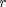. However, we will ignore this contribution. The Lagrangian equation of motion for the ball is then given by the following:
(1)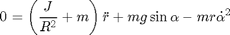
The beam angle (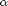) can be expressed in terms of the angle of the gear ().
(2)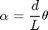
Building the model in Simulink
In this example, rather than express all the forces and geometric constraints (which is difficult to model in Simulink for dynamic systems with constraints) we will model the nonlinear Lagrangian equation of motion directly. This equation gives 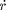 as a function of the state and input variables, , , , and . We will make use of the Fcn block to express this function. First, we must express the derivatives of the output, .
- Open a new model window in Simulink.
- Insert an Integrator block from the Continuous library.
- Insert a second Integrator to the right of the first, and connect the two with a line.
- Label the line connecting the two "d/dt(r)". To label a line, double-click near the line where you want the label (in this case, just below the line)
- Draw a line from the second Integrator and label it "r".
- Insert an Out1 block from the Sinks library and connect it to the "r" signal line. This will form the output of the system.
- Change the label of the Out1 block to "r" by single-clicking on the existing "Out1" label.
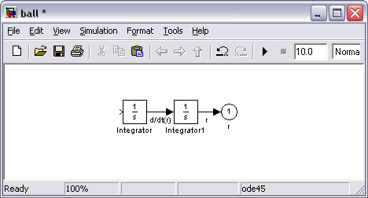
Now, we will insert the function which takes the vector 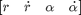 and returns 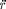.
Insert a Fnc block from the User-Defined Functions library and connect its output to the input of the first Integrator. Edit the Fcn block by double clicking it, and change it's function to the following:
(3)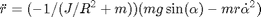
This function block takes an input vector, u, where each component is referred to as 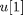, 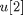, etc. In our case, 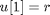, 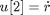, ![$u[3]=\alpha$](Content/BallBeam/Simulink/Modeling/html/BallBeam_SimulinkModeling_eq51435.png) , and 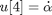.
, and 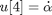.
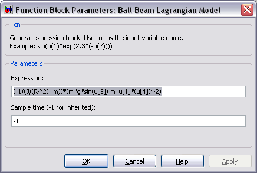
- Close the dialog box and change the label of the Fcn block to "Ball-Beam Lagrangian Model" (you can add newlines in the label by hitting return).
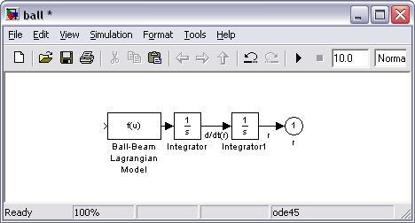
Now, we will begin to construct the function input vector u by feeding back the state signals from the integrators and forming a vector from them with a Mux block.
- Insert a Mux block from the Signal Routing library and connect its output to the input of the Ball-Beam block.
- Edit the Mux block (by double-clicking on it) and change its number of inputs to 4. The Mux block should now have four inputs.
- Tap a line off the d/dt(r) signal (hold Ctrl while drawing) and connect it to the second input of the Mux block.
- Tap a line of the r signal and connect it to the first input of the Mux block.
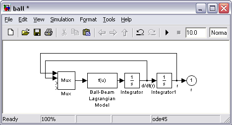
Now we will construct the signals and from the input .
- Insert an In block on the left side of your model window. Change its label to "theta".
- Insert a Gain block and connect it to the theta block. Change its gain value (double-click on it) to "d/L".
- Connect the output of the gain block to the third input of the Mux block. Label this line "alpha".
- Insert a Derivative block from the Continuous library and place it underneath the alpha signal line.
- Tap a line off the output of the Gain block and connect it to the input of the Derivative block.
- Connect the output of the Derivative block to the fourth input off the Mux block.
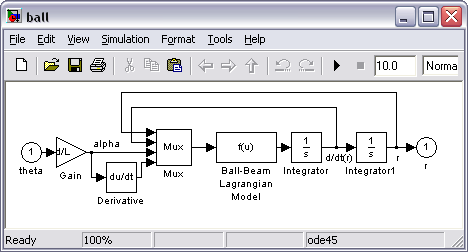
Save your model as "ball.mdl". You can download ours here, ball.mdl.
Open-loop response
To generate the open-loop response, it is helpful to first contain this model in a subsystem block.
- Create a new model window (select New from the File menu in Simulink or hit Ctrl-N).
- Insert a Subsystem block from the Ports & Subsystems library.
- Open the Subsystem block by double clicking on it. You will see a new model window labeled "Subsystem".
- Open your previous model window named ball.mdl. Select all of the model components by selecting Select All from the Edit menu (or hit Ctrl-A).
- Copy the model into the paste buffer by selecting Copy from the Edit menu (or hit Ctrl-C).
- Paste the model into the Subsystem window by selecting Paste from the Edit menu (or hit Ctrl-V) in the Subsystem window
- Close the Subsystem window. You will see the Subsystem block in the untitled window with one input terminal labeled theta and one output terminal labeled r.
- Resize the Subsystem block to make the labels visible by selecting it and dragging one of the corners.
- Label the Subsystem block "Ball and Beam Model".
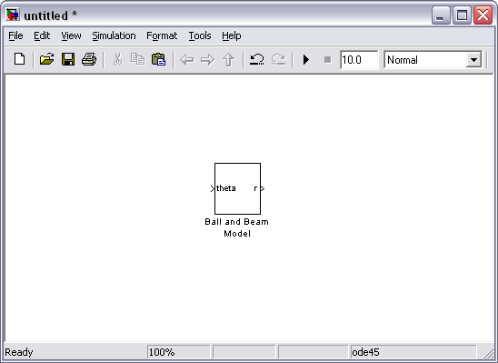
- Insert a Step block (from the Sources library) and connect it to the input of the Ball and Beam Model.
- Edit the Step block (by double clicking on it to bring up the dialog box) and change the Step Time value to 0. Close the Step block dialog box.
- Insert a Scope block (from the Sinks library) and connect it to the output of the Ball and Beam Model.
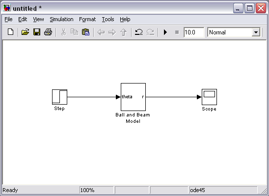
We will actually run this open-loop simulation model in the Ball & Beam: Simulink Controller Design page. In this page we will then design and simulate a controller for the system.